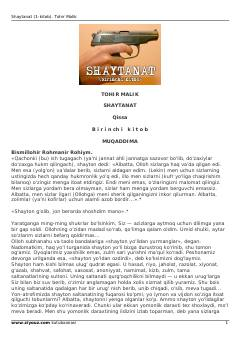

S1Tohir Malikning jinoyat olami va jamiyat illatlari haqidagi mashhur romani.
Tohir Malikning mashhur «Shaytanat» romanining birinchi kitobi bo'lib, unda jamiyatdagi illatlar, jinoyat olami va uning fojiali oqibatlari Asadbek hamda boshqa qahramonlar taqdiri misolida ochib beriladi. Asar insoniylik, vijdon va yovuzlik o'rtasidagi kurashni chuqur fosh etadi.